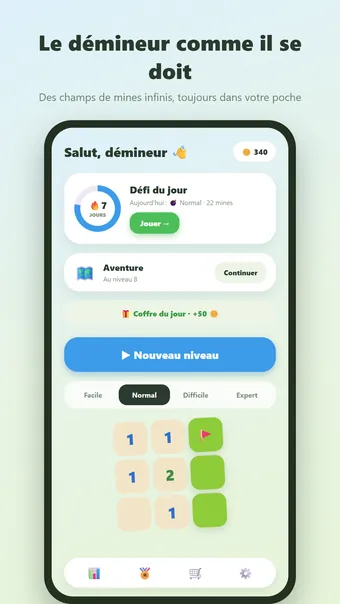
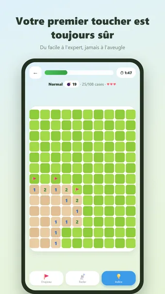
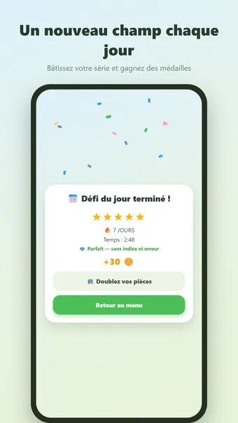
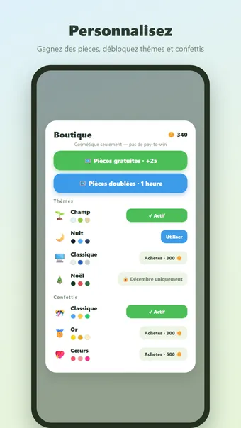

À propos de Démineur
Jouez au Démineur, le célèbre casse-tête — partout, à tout moment, entièrement hors ligne. Ouvrez toutes les cases sûres sans toucher de mine. Les chiffres vous indiquent combien de mines se cachent dans les cases voisines !
Comment jouer
Chaque champ de mines est généré à la volée et votre premier toucher est toujours sûr. Touchez pour ouvrir une case, restez appuyé pour poser un drapeau. Une mine touchée ? Cela coûte une vie ; trois mines et la partie est terminée.
Quatre niveaux de difficulté
- Facile : petit terrain avec peu de mines, parfait pour une pause
- Normal : le démineur classique
- Difficile : terrain plus grand, plus de mines
- Expert : pour les vrais démineurs
Mode aventure
Enchaînez des centaines de niveaux numérotés de plus en plus difficiles. Voyagez à travers des mondes colorés, gagnez une médaille à chaque niveau et décrochez des récompenses aux étapes clés.
Défi quotidien
Chaque jour un champ de mines unique. Gagnez une médaille de 1 à 5 étoiles et enchaînez les séries : 3, 7, 30 ou même 100 jours d'affilée !
Pièces et thèmes
Gagnez des pièces à chaque partie terminée et dépensez-les en indices ou en nouveaux styles : Champ, Nuit, Classique, Désert, Océan, Camouflage, Néon, Marbre, Printemps, Été, Noël et Halloween. Purement cosmétique — pas de pay-to-win.
Et aussi
- Aide contre des pièces
- Un radar qui marque trois mines pour vous
- 23 succès, de votre premier terrain à une série de cent jours
- Des statistiques détaillées : meilleur temps, parties sans erreur et plus
- Mode zen : pas de vies, du déminage tout en détente
- Son et vibrations (désactivables dans les réglages)
- Disponible en français, anglais, néerlandais, espagnol, allemand et portugais
Gratuit. L’application affiche des publicités, que vous pouvez supprimer avec un achat facultatif ; aucun compte n’est nécessaire.
Questions fréquentes
Démineur est-il gratuit ?
Oui. Démineur se télécharge et se joue gratuitement. L’application affiche des publicités, que vous pouvez supprimer avec un achat intégré facultatif.
Démineur fonctionne-t-il hors ligne ?
Oui. Démineur fonctionne sans connexion internet : vous pouvez jouer dans l’avion, dans le train ou partout sans Wi-Fi.
Faut-il un compte pour jouer à Démineur ?
Non. Aucune inscription ni connexion : ouvrez l’application et jouez. Vos parties et vos réglages restent sur votre appareil.
Comment jouer à Démineur ?
Chaque champ de mines est généré à la volée et votre premier toucher est toujours sûr. Touchez pour ouvrir une case, restez appuyé pour poser un drapeau. Une mine touchée ? Cela coûte une vie ; trois mines et la partie est terminée.
Y a-t-il un nouveau défi chaque jour ?
Chaque jour un champ de mines unique. Gagnez une médaille de 1 à 5 étoiles et enchaînez les séries : 3, 7, 30 ou même 100 jours d'affilée !
Où télécharger Démineur ?
Démineur est disponible pour les téléphones et tablettes Android sur Google Play. Utilisez le bouton en haut de cette page.
D’autres jeux qui pourraient vous plaire
Sudoku
Le sudoku classique. Des grilles à l'infini et un défi quotidien.
Google PlayNonogram
Le nonogram classique. Des grilles à l'infini et un défi quotidien.
Google PlayPuzzle de blocs
Remplis le plateau exactement. Toujours résoluble, un défi chaque jour.
Google PlayMentions légales
Vous trouverez ci-dessous les documents juridiques qui s’appliquent à Démineur.
Contact
Une question, un avis ou une demande liée à la vie privée ? Écrivez à joostmuijsenberg.dev@gmail.com.